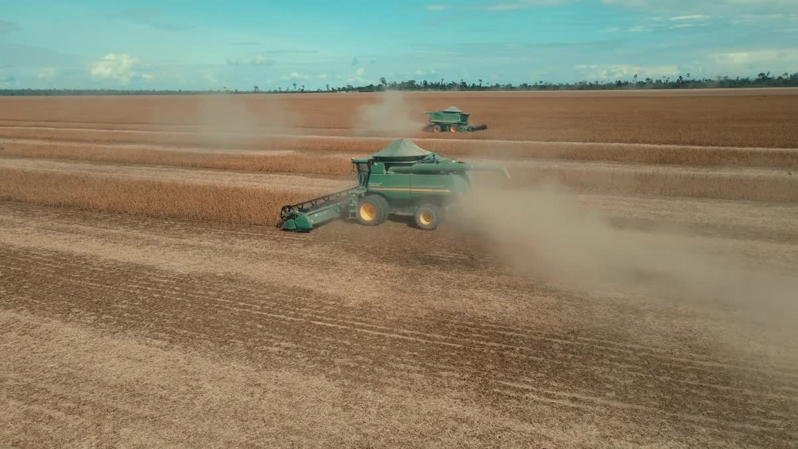
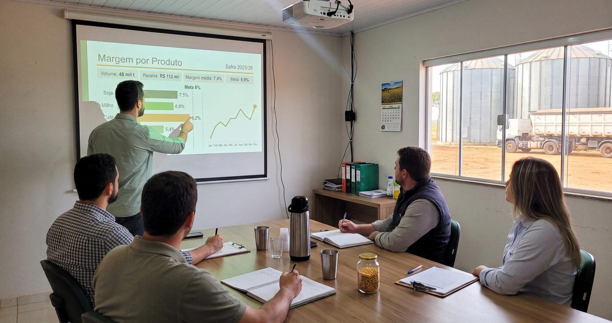
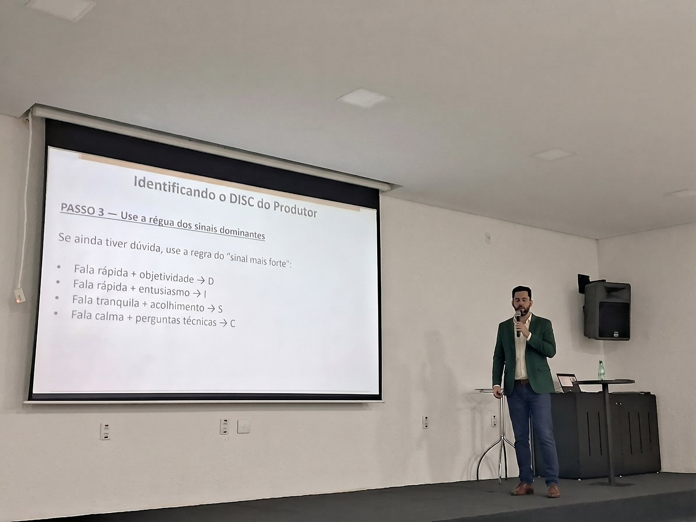

Treinamentos
Educação corporativa feita por quem viveu a operação do Agro
4 trilhas e 22 módulos, presencial ou online. Do workshop de algumas horas à trilha completa com consultoria.
As trilhas
Escolha o tema e nós montamos o formato

Trilha 1
Mercado e Comercialização de Commodities
- Soja e milho: oferta, demanda e formação de preço
- Café: oferta, demanda e formação de preço
- Originação e logística de grãos
- Tipos de insumos para nutrição animal
- Compras estratégicas em insumos para nutrição animal

Trilha 2
Gestão Comercial e Resultado
- Gestão comercial no Agro
- Metas, indicadores e feedback para o time Comercial
- Formação de preço e margem
- Vendas e negociações no Agro
- Plano de expansão comercial
Trilha 3
Crédito, Risco e Tributário
- Gestão de riscos para quem não é trader
- Crédito e cobrança no Agro
- Garantias no Agro: CPR, penhor de safra e alienação fiduciária
- Barter e operações estruturadas com o produtor
- Inteligência tributária na comercialização
- Integração Comercial e Crédito

Trilha 4
Liderança e Pessoas no Agro
- Mentoria individual para líderes
- Liderança de times comerciais
- Contratação e retenção de vendedores no Agro
- Formação de líderes
- Sucessão na empresa familiar do Agro
- DISC aplicado a equipes e clientes
Formatos
Do curso ao projeto
Presencial ou online. A trilha + consultoria transforma o curso em resultado na empresa.
Palestra1 a 2 h
Workshop4 a 8 h
Trilha In Company16 a 24 h
Trilha + consultoriasob medida
Quer saber mais sobre os nossos treinamentos?
Conversar pelo WhatsApp